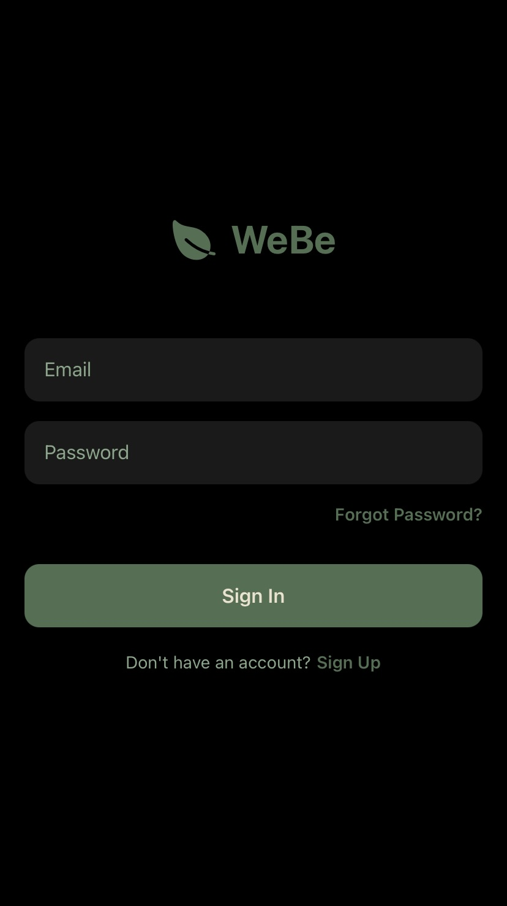

AI Therapist
Built an emotionally-aware AI assistant designed to provide supportive conversations and mental health resources. The system uses natural language processing to detect emotional cues and respond with appropriate empathy and guidance.
My Role & Work:
- Designed and built a mobile app using React Native that integrates with OpenAI's GPT API (gpt-3.5-turbo)
- Implemented retrieval-augmented prompting to recommend campus events and resources tailored to students' needs
- Focused on human-centered design, ensuring conversations felt empathetic, concise, and supportive
- Managed full-stack challenges like API integration, error handling, and prompt engineering while aligning with ethical standards
React Native
OpenAI API
GPT-3.5-turbo
Mobile Development
Prompt Engineering